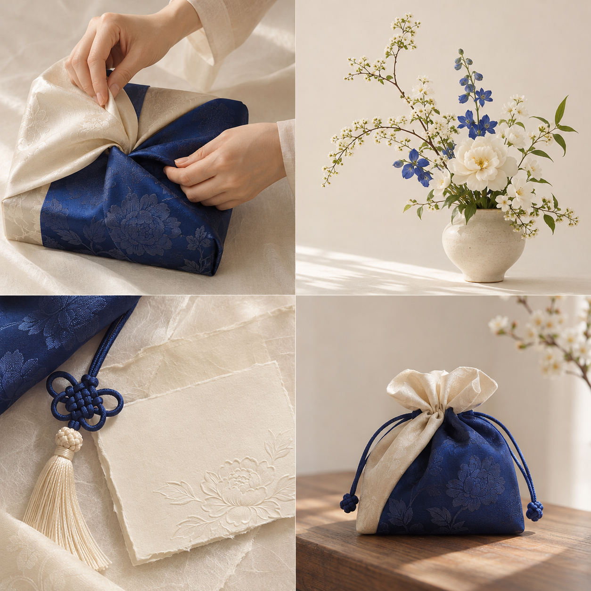

이야기를 듣습니다
누구에게 어떤 마음을 전하는지 확인합니다.
상담 장면 이미지
광장시장의 전통 원단을 포장 이후에도 사용할 수 있는 파우치와 소품백으로 만듭니다. 선물의 감정이 물건 안에서 더 오래 머물도록 설계합니다.

대표 제품 또는 포장 과정 이미지 영역전통 원단을 현대적인 파우치와 소품백으로 풀어 포장을 선물의 일부로 만듭니다.
받는 사람의 색과 분위기, 관계의 이야기를 듣고 가장 자연스러운 꽃의 모습으로 전합니다.
관계, 순간, 떠오르는 색을 고르면 상담을 시작할 한 문장이 완성됩니다.
기념일을 위한 연인 선물을 찾고 있어요. 아이보리가 떠오릅니다.
누구에게 어떤 마음을 전하는지 확인합니다.
사람의 분위기와 꽃말에 맞춰 꽃과 전통 원단을 큐레이션합니다.
자연스러운 꽃의 형태와 다시 쓸 수 있는 포장을 함께 만듭니다.
꽃 이야기와 관리법, 패키지 재사용 안내를 함께 담습니다.
꽃을 사러 간 시간, 상대를 떠올리며 고른 순간, 들고 가는 동안의 설렘까지 선물이라고 생각합니다.
그 마음을 감쌌던 포장도 너무 빨리 버려지지 않기를 바랐습니다. 설담화는 사람의 이야기를 먼저 듣고, 꽃과 색, 다음 쓰임이 있는 포장으로 답합니다.
박설아
설담화 대표
정해진 상품을 고르기 전에 먼저 전하고 싶은 마음에서 꽃과 색, 오래 남을 포장의 방향을 찾습니다.